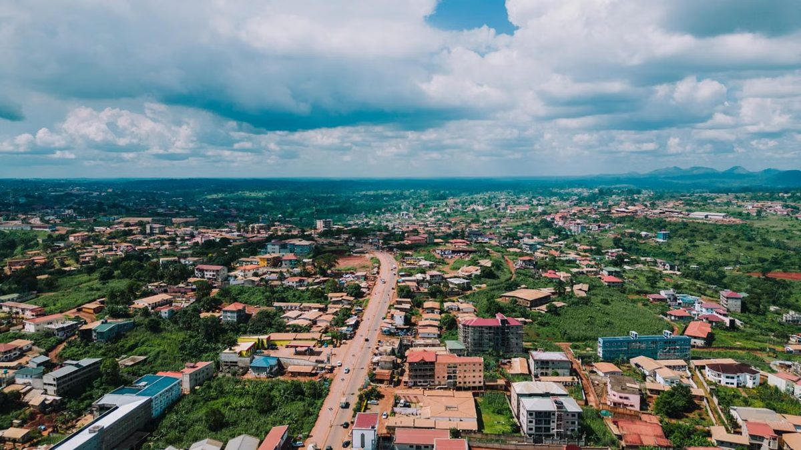

Where Should I Move in Africa? How to Choose Your Country
Africa is 54 countries, not one place. Choosing where to live is one of the biggest decisions in your move, and "where my parents are from" or "where everyone on YouTube is going" are not always the right answer. Here is how to choose.

Two different starting points
If you were born in Africa or your parents were, your home country is the obvious choice. It may be the easiest on paper: you may already have citizenship, family, the language and a feel for how things work. But it's still worth asking whether it's the best place for your work, your children and your health. Some people move back to their home country but to a different city from where their family lives, and that's fine.
If you are part of the historic diaspora (for example African American, Caribbean or Afro-Latino), you get to choose. That's exciting, but it means doing real research: visas, residency, cost of living, safety and community all differ from country to country.
The 8 things to compare
Score each country you're considering from 1 to 5 on these:
- Legal right to stay. Can you live and work there long-term? Do you have citizenship, or is there a clear residency route?
- Income. Can you keep your remote work there (internet, power, time zone)? Is there a market for the business you want to start?
- Cost of living in the exact area you'd live in, not the national average.
- Safety and stability in the area you'd live in. Check your own government's travel advice and ask people who live there.
- Health care. Is there a good hospital within reach? Can you get your medication?
- Schools, if you have children: fees, curriculum and accreditation.
- Language and culture. Can you work, shop and make friends in the main language? English, French, Portuguese, Arabic and Swahili cover different regions.
- Community. Are there people like you there already: returnees, professionals, people of your faith? Starting over is easier with a community.
The country with the highest total isn't automatically the answer, but it shows you where your gut is right and where it's ignoring something important.
Countries with special routes for the diaspora
Several West African countries have created special citizenship or residency routes for people of African descent. These change often, so treat this as a starting point and check the official government sites before you apply. Here's the picture as of November 2026:
- Ghana is the best-known destination for the historic diaspora. It offers the Right of Abode, a status that lets people of African descent live in Ghana indefinitely, enter without a visa and work without a work permit (see the Ghana Immigration Service). In February 2026 Ghana paused new diaspora citizenship applications to overhaul the process, so check the current status before you plan around it.
- Sierra Leone grants citizenship to people who can show ancestral ties to the country, including through DNA ancestry tests, under its African Diaspora Accession Program.
- Benin passed a law in 2024 that offers nationality to adults who can show they descend from people enslaved and taken from Africa.
- Guinea-Bissau has also launched a return initiative for the diaspora.
One benefit of citizenship in a West African country is membership of ECOWAS, which makes travel across the region much easier. Remember too that residency and citizenship are not the same as land rights: in Ghana, for example, non-citizens can usually only hold land on a lease, so check property rules separately.
Plan B for paperwork. These processes can take much longer than the official timeline. Decide which visa you'll live on while you wait, and never give money to "agents" who promise to speed things up without checking them with the official office first.

Choose a city, not just a country
Accra and Kumasi, Lagos and Enugu, Nairobi and Mombasa: two cities in the same country can feel like two different worlds. The capital usually has the best internet, hospitals, schools and community, but also the highest rent and traffic. Smaller cities can be cheaper and calmer, but check that you can still earn and get good health care there.
How to test your choice
- Narrow your list to two or three countries using the 8 criteria.
- Join online groups of returnees and expats in each one, and ask specific questions.
- Visit, but not as a tourist. Stay in a regular area, cook, shop, use local transport and work a few days from there.
- Spend at least three months in your top choice before you move for good.

Plan your move, whichever country you choose. My workbook, How to Move Back to Africa ($37), covers the documents and national IDs for 21 African countries, plus worksheets for your budget, income, visit plan and first 90 days. Not sure if you're ready? Take the free readiness quiz.
Common questions
- Where are Black Americans moving to in Africa?
- Ghana is the best-known destination, followed by countries such as Nigeria, Kenya, South Africa, Senegal, Rwanda, Sierra Leone and Benin. The right choice depends on your legal right to stay, income, cost of living, safety, health care, schools, language and community.
- Which African countries offer citizenship to the diaspora?
- As of November 2026, Ghana, Sierra Leone, Benin and Guinea-Bissau have special citizenship or return programmes for people of African descent. Ghana also offers the Right of Abode residency status. Ghana paused new diaspora citizenship applications in February 2026 to overhaul the process. Rules change often, so check official government sources before you apply.
- Can an American just move to Africa?
- You can visit many African countries easily, but living there long-term needs a residency permit, work permit, Right of Abode or citizenship, depending on the country. Check the immigration rules of the specific country before you plan your move.
This guide is general information, not legal or immigration advice. Citizenship and residency rules change often. Always check with the official government office before you apply or pay anyone.